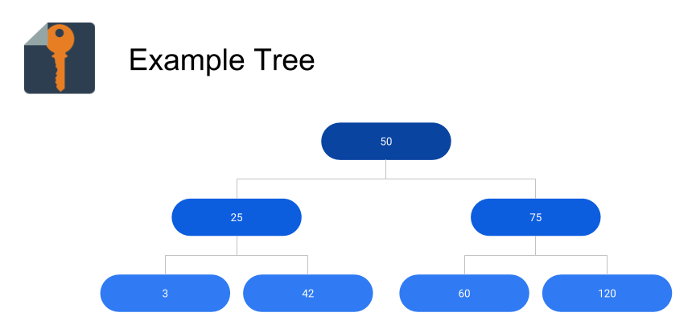
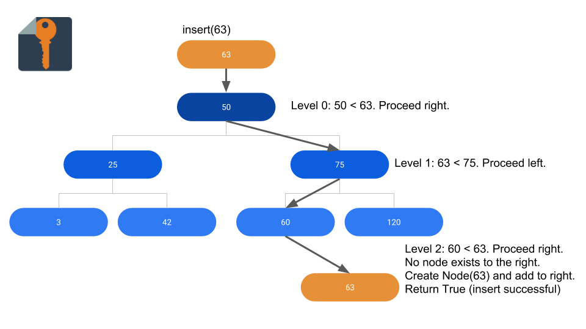
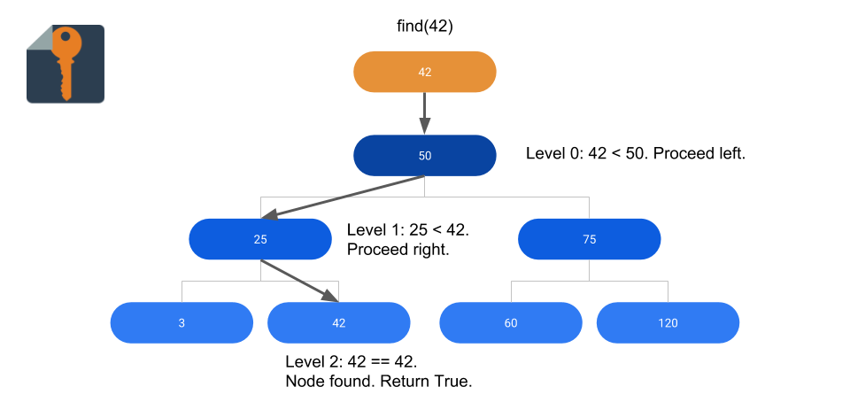
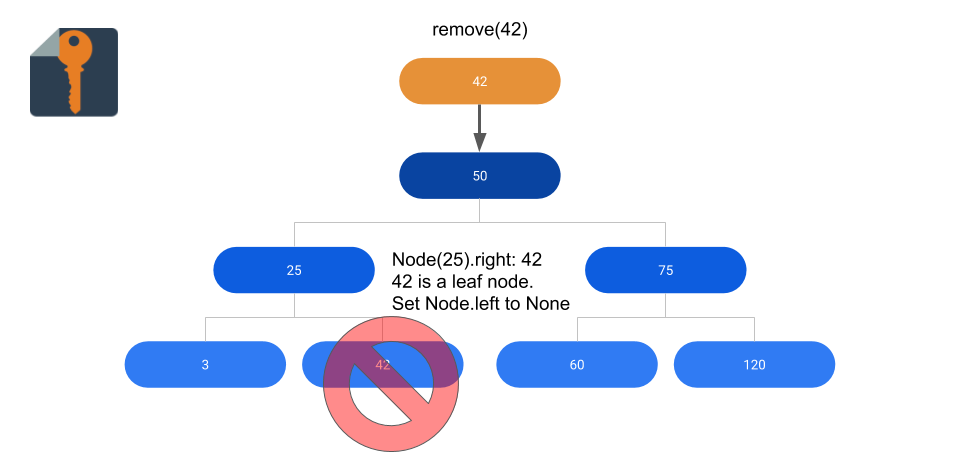
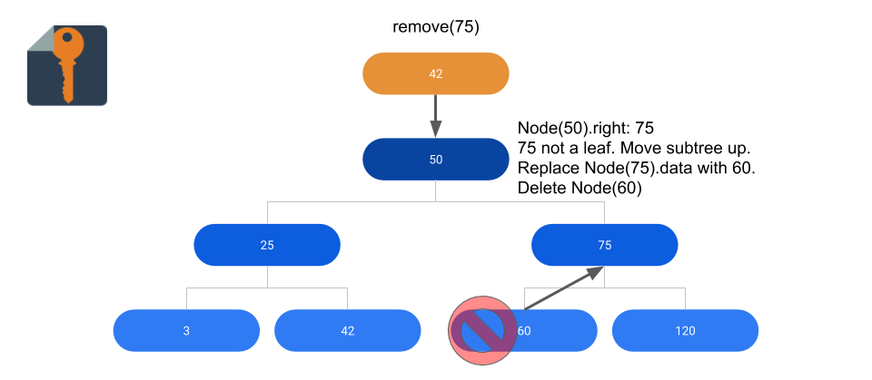
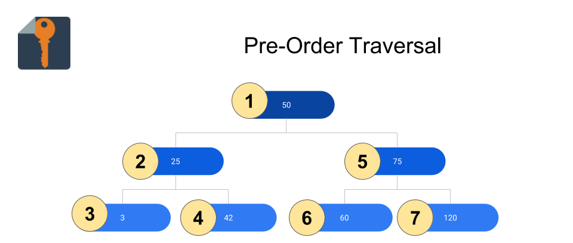
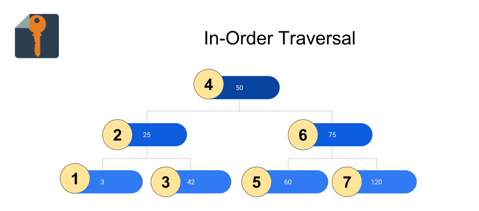
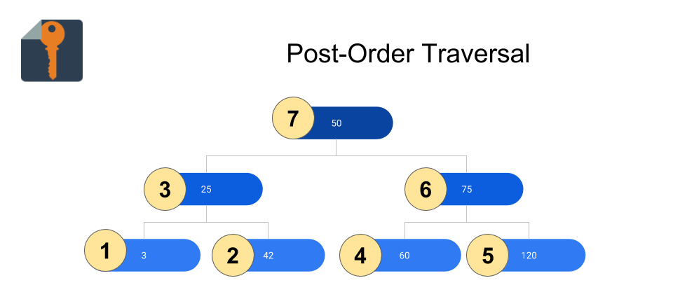

How to Implement a Binary Search Tree in Python

Decisions, decisions... Life is all about choices! Usually there are so many ways to go. An infinite expanse of roads and pathways stretches in front of you, an endless gradient of details; as you consider them, your head starts to spin, your eyes start to droop, your mind races, your head pounds -
Wait a second. There's no need to stress. Since we're talking about Binary Search Trees, decisions are going to be a lot easier. A Binary Search Tree (BST) gives you two choices: left or right, less than or greater than, 0 or 1 - hence the name, binary.
Overview
A BST is a great choice for storing data that may need to be sorted. Anything that is stored in a BST must be comparable, which means that the data can be compared with less than <, greater than >, and equal to == operators.
For flat arrays, searching for, inserting, and deleting data will loop through every single element, yielding an average efficiency of O(n). With a Binary Search Tree, each step down the tree cuts the remaining nodes to search by up to half. For this reason, search on a BST is performed in O(log(n)) time on average. This is a significant improvement, especially for large data sets.
Insert

In this case, the Node will have most of the important code for the insert method. The BST class will essentially be a wrapper for the Node, hiding some of the rough edges of the internal methods to give the user a clean interface.
For the Node, our code will look like this:
class Node(object):
...
def insert(self, d):
if self.data == d:
return False
elif d < self.data:
if self.left:
return self.left.insert(d)
else:
self.left = Node(d)
return True
else:
if self.right:
return self.right.insert(d)
else:
self.right = Node(d)
return True
...
The above code first checks if the data object already exists in the tree. If it does, it returns False, indicating that no node was inserted. Otherwise, it will go to the left or right depending on whether the data to insert is greater or smaller than the node's value. If there's nothing on the side that is chosen, a new node is created, and we return True. Otherwise, the method continues recursively, checking and moving left or right until the data is found or inserted in the tree.
The BST class will wrap this neatly, beginning the recursive call on the root node like so:
class BST(object):
...
def insert(self, d):
'''
returns True if successfully inserted, false if exists
'''
if self.root:
return self.root.insert(d)
else:
self.root = Node(d)
return True
...
Find

find is another recursive method, which means that it will be implemented in the Node class.
class Node(object):
...
def find(self, d):
if self.data == d:
return True
elif d < self.data and self.left:
return self.left.find(d)
elif d > self.data and self.right:
return self.right.find(d)
return False
...
In the above code snippet, we first check for the best case - did we find what we are looking for? If so, we are done and can tell everyone the good news by returning True.
Otherwise, we have to check which way to go. If the data is less than the current node, we move left. Otherwise, we move right. However, to move left or right, there has to be something there. If not, we're just going to call it quits and return False.
The BST wrapper will shape up like this:
class BST(object):
...
def find(self, d):
'''
Returns True if d is found in tree, false otherwise
'''
if self.root:
return self.root.find(d)
else:
return False
...
Remove


Finally, the BST class is getting its chance to be more than just a wrapper! The Node class will have no remove method at all - the magic will happen entirely within the BST class.
While most of these methods can be explained in a fairly straightforward way, remove is where I draw the line. For some reason, this code is ridiculously complicated, and it's best to just bite the bullet and break it down into a set of well-defined cases.
class BST(object):
...
def remove(self, d):
'''
Returns True if node successfully removed, False if not removed
'''
# Case 1: Empty Tree?
if self.root == None:
return False
# Case 2: Deleting root node
if self.root.data == d:
# Case 2.1: Root node has no children
if self.root.left is None and self.root.right is None:
self.root = None
return True
# Case 2.2: Root node has left child
elif self.root.left and self.root.right is None:
self.root = self.root.left
return True
# Case 2.3: Root node has right child
elif self.root.left is None and self.root.right:
self.root = self.root.right
return True
# Case 2.4: Root node has two children
else:
moveNode = self.root.right
moveNodeParent = None
while moveNode.left:
moveNodeParent = moveNode
moveNode = moveNode.left
self.root.data = moveNode.data
if moveNode.data < moveNodeParent.data:
moveNodeParent.left = None
else:
moveNodeParent.right = None
return True
# Find node to remove
parent = None
node = self.root
while node and node.data != d:
parent = node
if d < node.data:
node = node.left
elif d > node.data:
node = node.right
# Case 3: Node not found
if node == None or node.data != d:
return False
# Case 4: Node has no children
elif node.left is None and node.right is None:
if d < parent.data:
parent.left = None
else:
parent.right = None
return True
# Case 5: Node has left child only
elif node.left and node.right is None:
if d < parent.data:
parent.left = node.left
else:
parent.right = node.left
return True
# Case 6: Node has right child only
elif node.left is None and node.right:
if d < parent.data:
parent.left = node.right
else:
parent.right = node.right
return True
# Case 7: Node has left and right child
else:
moveNodeParent = node
moveNode = node.right
while moveNode.left:
moveNodeParent = moveNode
moveNode = moveNode.left
node.data = moveNode.data
if moveNode.right:
if moveNode.data < moveNodeParent.data:
moveNodeParent.left = moveNode.right
else:
moveNodeParent.right = moveNode.right
else:
if moveNode.data < moveNodeParent.data:
moveNodeParent.left = None
else:
moveNodeParent.right = None
return True
...
Whew! Glad that one's done.
Traversals
There are three ways to traverse a tree: pre-order traversal, in-order traversal, and post-order traversal. The traversals are mostly implemented in the Node class.
We mentioned at the start of the article that BSTs can be useful for sorting data. As it turns out, the way in which you traverse the tree structure will yield different element orderings that can be applied to a variety of applications.
The most straightforward example is sorting from least to greatest. If your BST contains all numbers, an in-order traversal of the tree will return a list of all the numbers in the tree, sorted. Another application is the conversion of expressions between infix, prefix, and postfix. If you can represent an expression as an Abstract Syntax Tree (AST) or something similar, these conversions can be performed with an in-order, pre-order, or post-order traversal of the tree.
The code for each method of traversal will look very similar. Each time, we'll simply change where we make our recursive call.
Pre-Order Traversal

class Node(object):
...
def preorder(self, l):
'''
l: the list of data objects so far in the traversal
'''
l.append(self.data)
if self.left:
self.left.preorder(l)
if self.right:
self.right.preorder(l)
return l
...
In-Order Traversal

class Node(object):
...
def inorder(self, l):
'''
l: the list of data objects so far in the traversal
'''
if self.left:
self.left.preorder(l)
l.append(self.data)
if self.right:
self.right.preorder(l)
return l
...
Post-Order Traversal

class Node(object):
...
def postorder(self, l):
'''
l: the list of data objects so far in the traversal
'''
if self.left:
self.left.preorder(l)
if self.right:
self.right.preorder(l)
l.append(self.data)
return l
...
For each traversal, I added a corresponding wrapper in the BST class to expose it:
class BST(object):
def preorder(self):
'''
Returns list of data elements resulting from preorder tree traversal
'''
if self.root:
return self.root.preorder([])
else:
return []
def postorder(self):
'''
Returns list of post-order elements
'''
if self.root:
return self.root.postorder([])
else:
return []
def inorder(self):
'''
Returns list of in-order elements
'''
if self.root:
return self.root.inorder([])
else:
return []
Full Source and Tests
Thank you for reading. Check out the full source code for what we did today below!